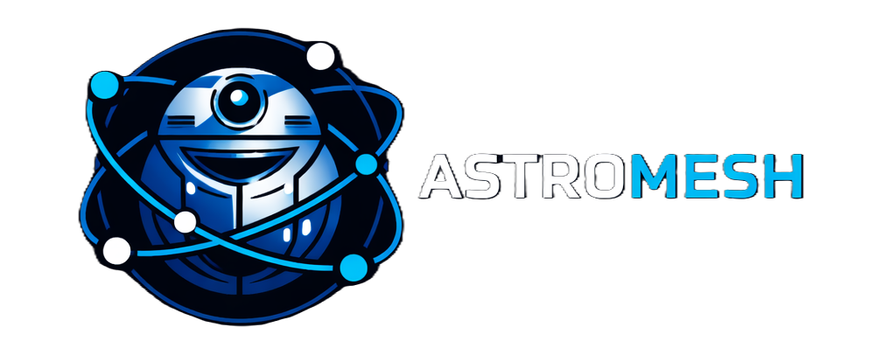

ECOSISTEMA ASTROMESH · 2/2Un "hola"
por WhatsApp
cruza 9 pasos
antes de volver.
session_id estable por conversación y una clave de idempotencia: un reintento de Meta no es un segundo mensaje.confirm espera a una persona: otro agente nunca puede confirmarla.Cuatro lenguajes, una sola conversación. Go en el borde, Python en el runtime, TypeScript en las interfaces, Rust donde hay CPU.